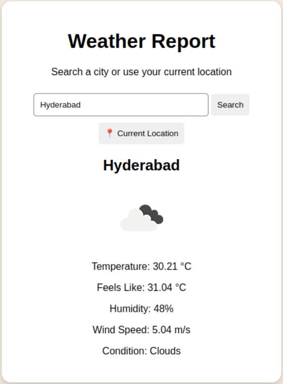
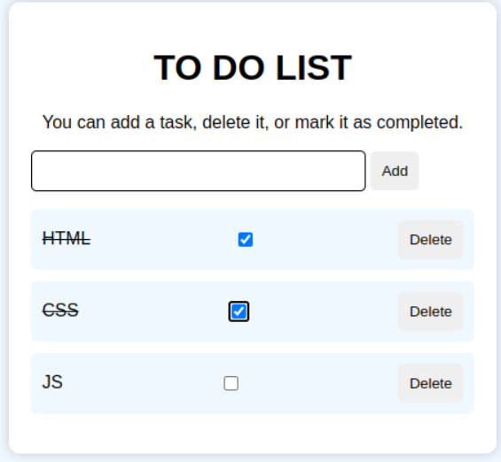

I am a 2nd-year CSE student passionate about creating responsive and user-friendly web applications using HTML, CSS, and JavaScript. I enjoy learning new technologies, solving coding challenges, and building projects that improve my development skills..
I am Mounika, a 2nd-year Computer Science and Engineering student at RGUKT Basar.I have a strong interest in software development and enjoy learning new technologies. My current focus is on Frontend Development, Data Structures and Algorithms, and Backend I have experience with C, Java, HTML, CSS, JavaScript, and MySQL. I enjoy building web applications that are responsive, user-friendly, and solve real-world problems. Through projects and continuous practice, I aim to strengthen my technical skills and prepare for a successful career in the technology industry.
I have developed a strong foundation in programming, web development, and database anagement through academic coursework, personal projects, and continuous learning. I enjoy building responsive web applications,solving programming challenges,and exploring new technologies.

A weather application that fetches real-time weather information using a weather API.

A responsive task management application that helps users organize daily activities. Features include adding tasks, marking tasks as completed, deleting tasks, and saving data using Local Storage.